只在必要时才让人参与¶
本课的计划如下：
-
把验证用的 Action App 导入我们的项目。
-
配置流程走向：当智能体无法匹配发票和 PO 时，创建一个 Action Center 任务，让人来做决定。
-
根据 App Action（Approve 或 Reject）引导流程的后续走向。
-
（可选）改进智能体的提示词，处理一些边缘情况。
目标¶
在 Failed Match 路径上添加一个人工验证步骤。当智能体标记出不匹配时，审核人会在 Action Center 中看到包含两份文档的摘要，并选择批准或拒绝这张发票。工作流会根据这个决定继续执行。
人机协同¶
很多时候，智能体无法确定该怎么处理，这时就需要人的参与。人们在 Action Center 中处理任务，用的是机器人和智能体贴心汇总好的输入：
- 做决定所需的全部输入都应该呈现在同一个屏幕上——理想情况下，我们不希望业务用户还要打开别的应用，或者回头翻看执行流程。
- 智能体的职责是把所有输入准备成正确的格式，这样等到需要用户做决定时，数据已经就绪。
- 一旦做出决定，流程就会继续执行后续步骤。
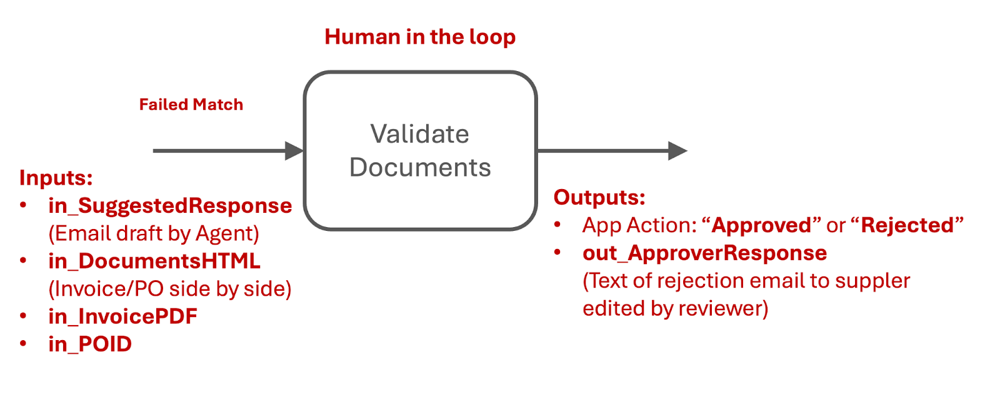
关于审批的说明
现实中，如果采购订单买的是别的东西，批准这张发票并送去付款是绝对不行的——在有些国家这甚至是犯罪。但在本练习里，就当人们在这个决定上可以随心所欲，而且不用承担任何后果。
要打造一个好用的验证界面，我们需要一个前端，把问题连同做决定所需的信息一起呈现出来：
- 发票和采购订单应该并排展示——最好把差异用红色高亮出来。
- 用一两句话向审核人说明问题所在。
- 如果决定是拒绝发票并给供应商发邮件，一封草拟好的邮件能节省时间。这封邮件智能体已经帮我们生成好了！
我们不用从零开始搭建，直接复用一个现成的 Action App 模板。
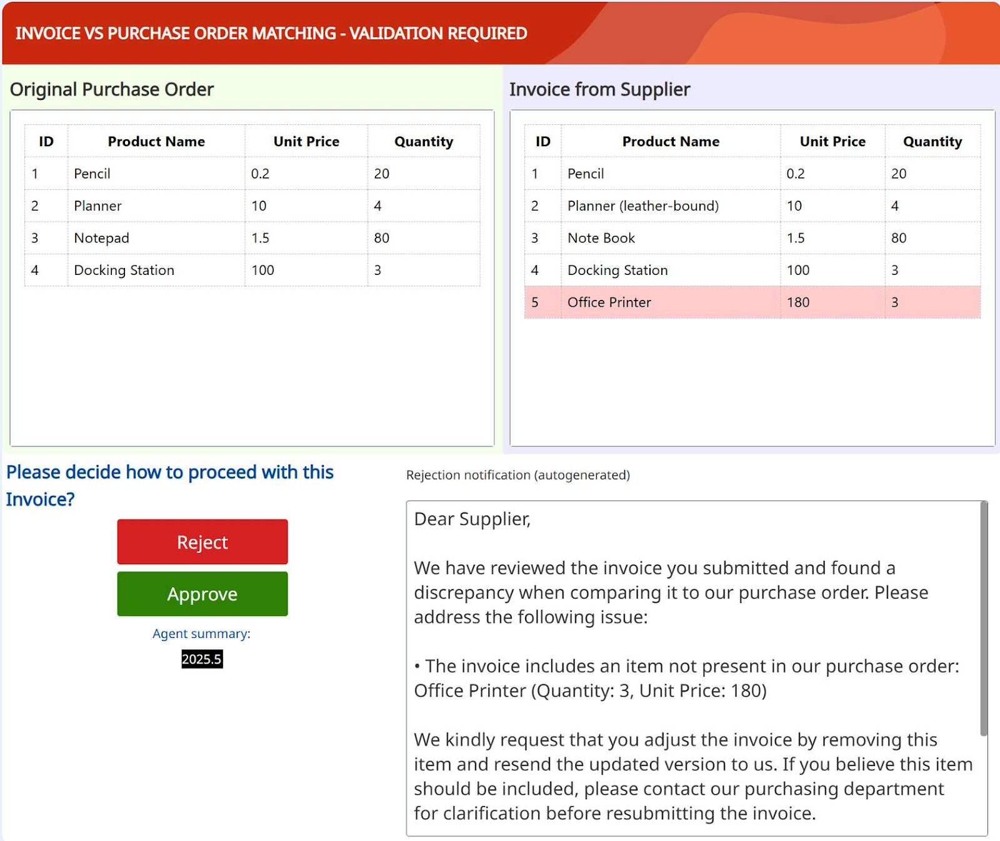
步骤¶
1. 导入验证应用¶
在你的解决方案中，点击 Explorer（资源管理器）里的 + 图标添加项目，然后选择 Import existing（导入现有项目），把新项目添加到解决方案中。找到并导入验证应用模板。
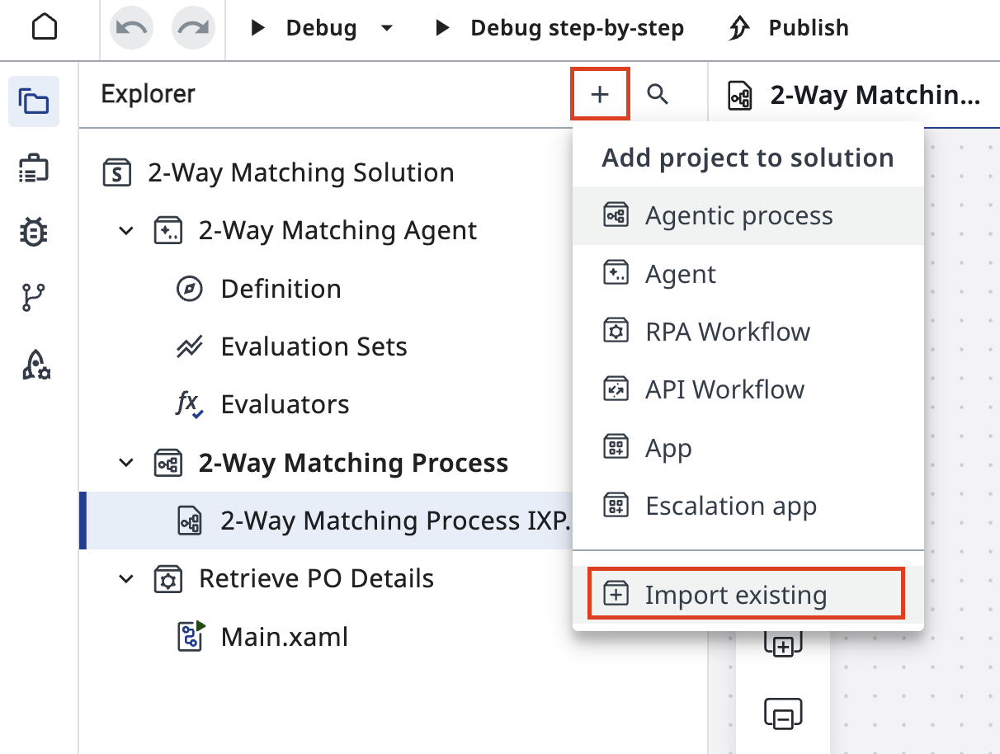
在列表中找到 2WM Validation App IXP Template，选中它，然后点击 Add（添加）。
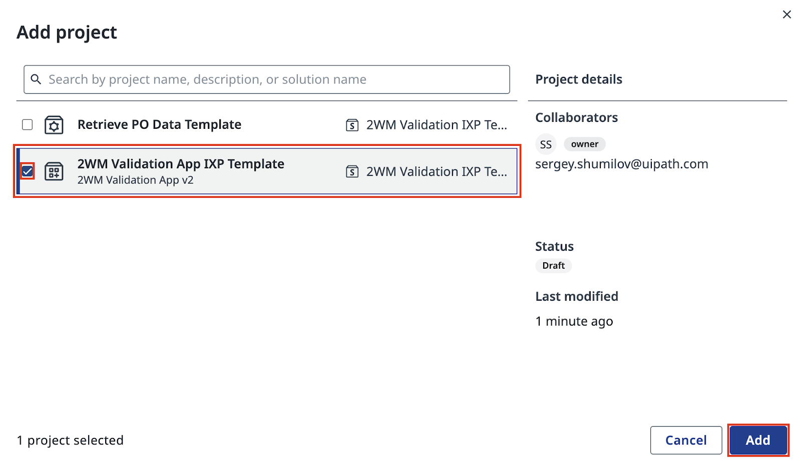
应用出现在你的解决方案里之后，浏览一下它的结构，理解它的设计思路。
-
应用 UI elements（界面元素）的结构——这是验证任务呈现在用户面前的样子。
-
App Actions 和 Action Schema——涵盖用户决定或操作的各种可能结果。
-
应用的 Inputs and Outputs（输入和输出）：数据从哪里来，用在哪里，输出什么。
在应用设计器中打开 MainPage：
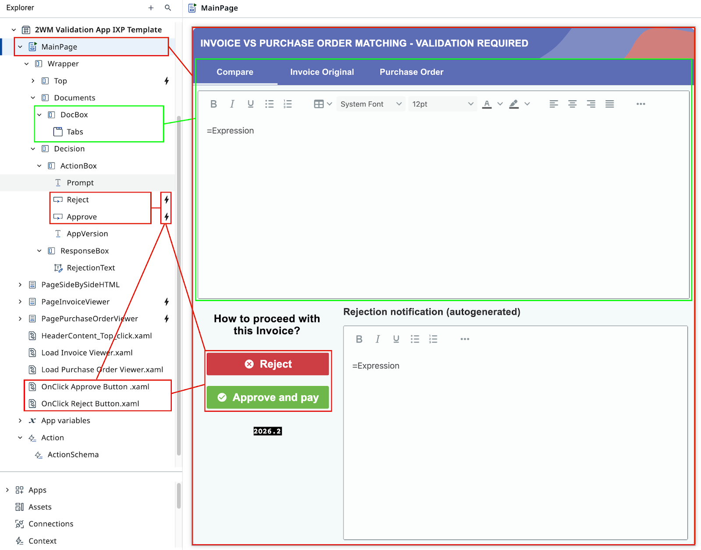
看看应用的 input（输入）和 output（输出）配置。它展示了智能体会送进来什么数据，审核人的决定又会产出什么。
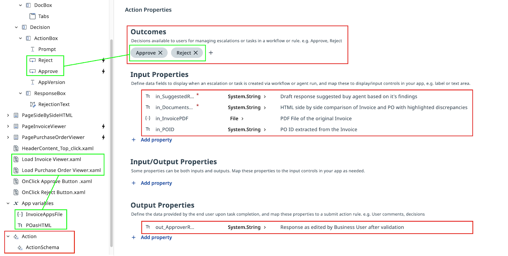
2. 在 Maestro 中配置人工任务¶
回到 Maestro 中你的 Agentic Process，把 Failed Match 路径上的验证任务配置为 Action App 任务。
选中 Failed Match 路径上的人工任务节点，把它的操作类型设为 Create action app task（创建 Action App 任务）。
然后从 Defined resources（已定义资源）列表中选中你刚导入的 2WM Validation App IXP。
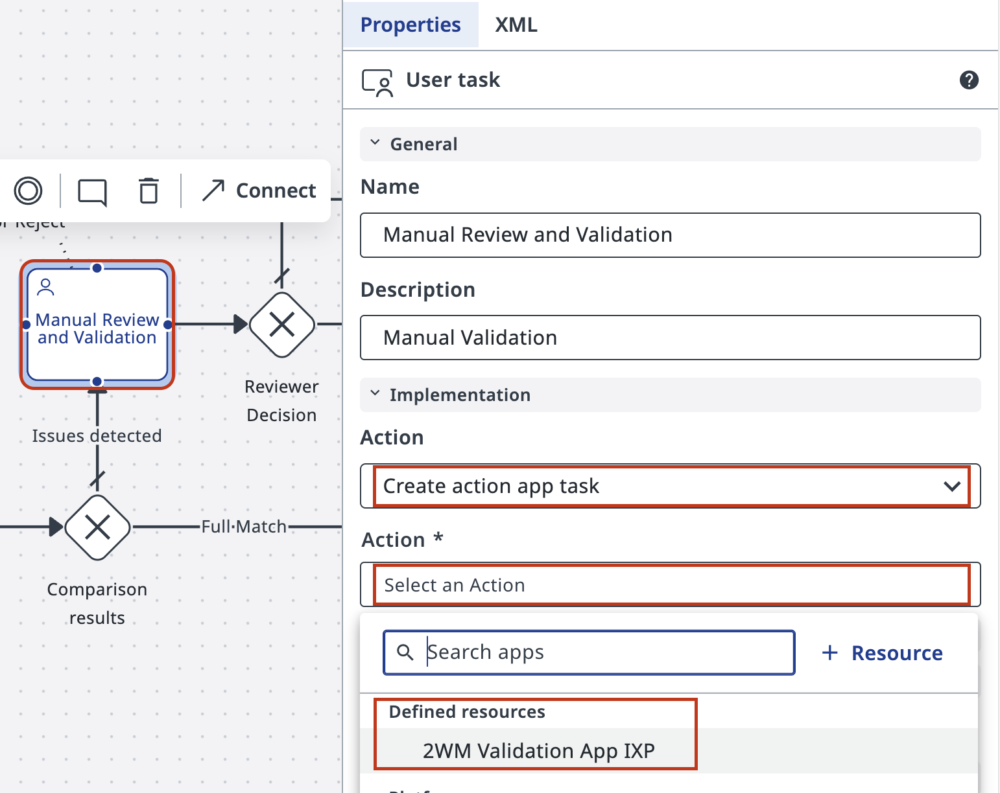
自定义任务标题，方便稍后在 Action Center 中辨认——例如：Invoice Validation (Your Name)。
在 Advanced Options（高级选项）中，把任务分配给你自己，免得之后要在一堆未分配任务里翻找。
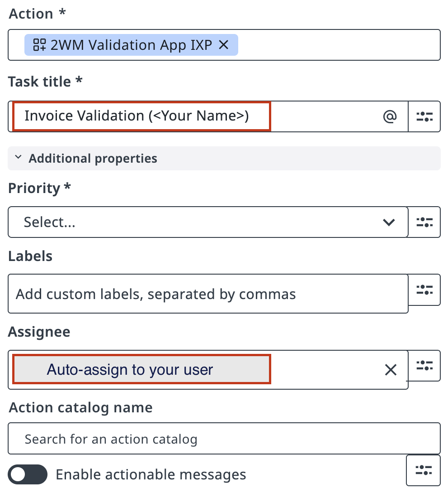
把智能体的输出映射到应用的输入上，方法和之前配置智能体时一样。
在 Inputs（输入）区域，把智能体的 out_DocumentsHTML 和 out_SuggestedResponse 连接到对应的应用输入字段。
在这里你可能会再次体会到遵循命名约定的真正价值！
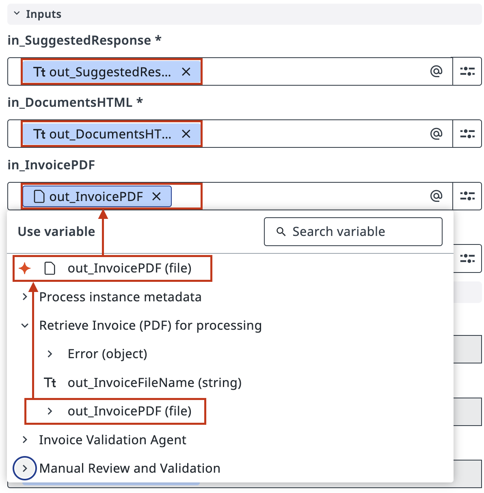
保存任务配置。
3. 配置网关决策¶
现在来配置基于验证决定的下游流程。
选中人工任务之后负责路由流程的 Exclusive Gateway（排他网关）。
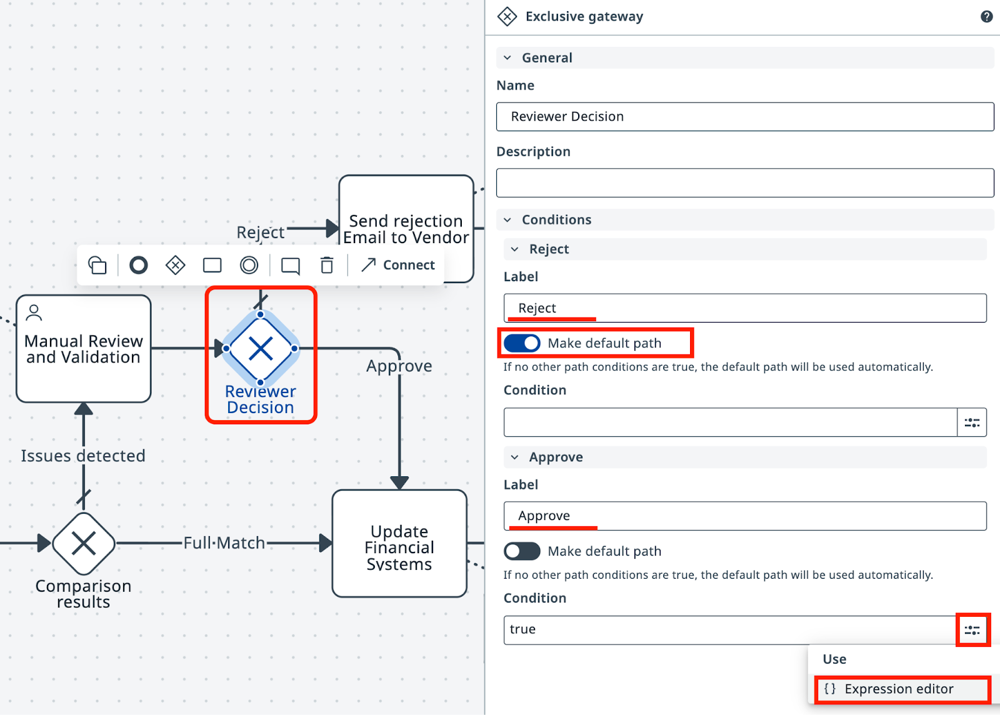
把 Reject（拒绝）设为默认路径——记住，真实的业务流程可能会有不同的做法。
对于 Approve（批准）路径，点击 Expression Editor（表达式编辑器）按钮来配置条件。
这样，当审核人批准发票时，流程就会走 Approve 路径。
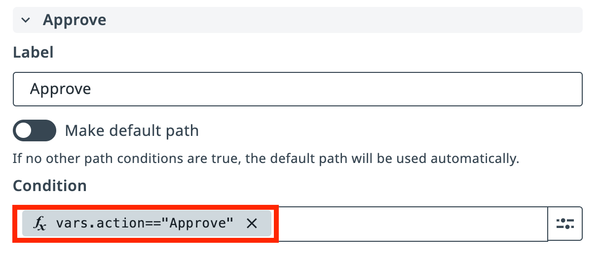
4. 测试人工验证流程¶
现在来测试完整的人工验证流程。点击 Debug 并观察执行情况。把 in_FailureProbability 设成较高的值（比如 90），发票就会频繁匹配失败，从而触发人工验证任务。
点击 Debug 启动流程。检测到不匹配时，执行会在 Manual Review and Validation 任务处暂停。
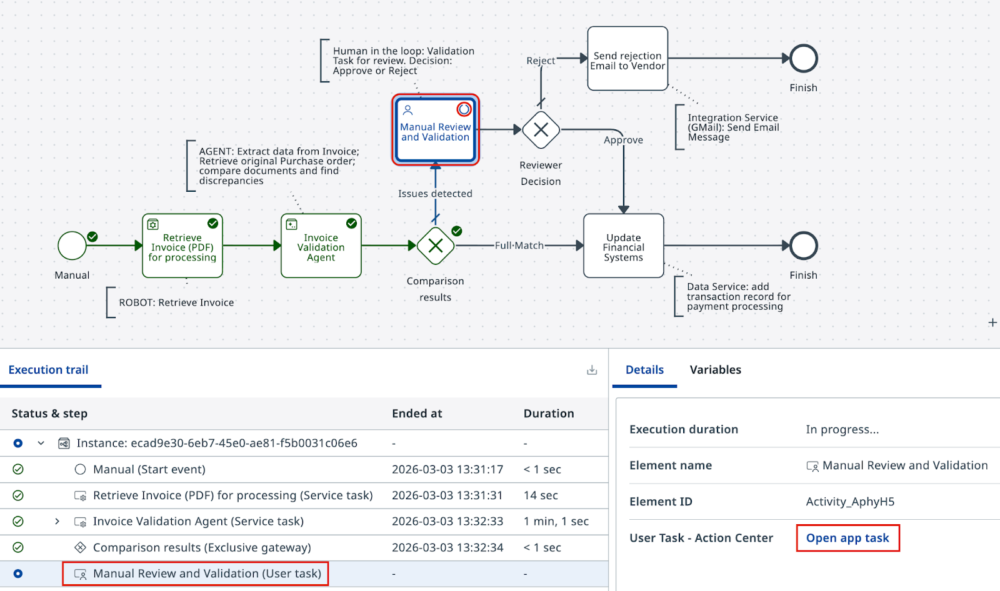
在 Details（详情）面板中点击 Open app task（打开应用任务）打开这个任务。查看发票和 PO 的并排对比，然后做出决定。
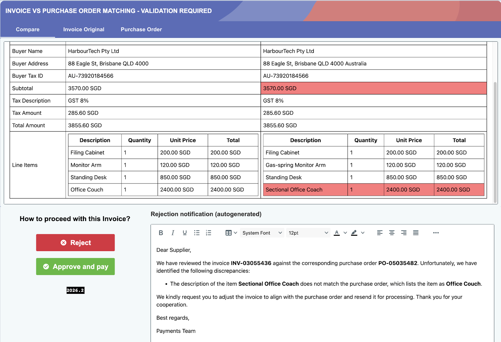
看起来智能体干得不错。不过这张发票该批准还是拒绝呢？点击 Approve and pay（批准并付款）或 Reject（拒绝）。你一提交决定，Maestro 就会沿着相应的路径继续执行。
回顾一下端到端流程，确认人工验证步骤已正确集成，并且会根据你的决定进行路由。
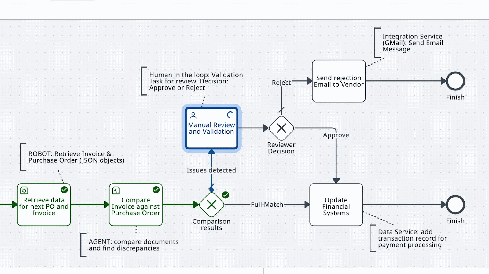
多跑几次测试——Approve 和 Reject 都试试——确认两条路径都能正确路由。
咱们承认，这个应用的设计还有提升空间，但总的来说——它足够胜任了。
再多测几次，然后进入下一课。我们就快完成了！